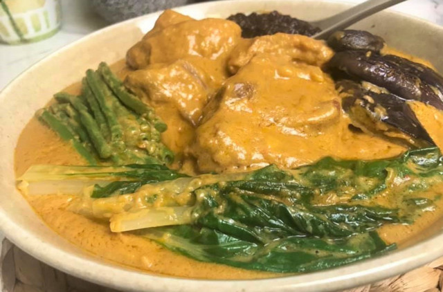

Beef Kare-Kare

A perfect match with spicy shrimp paste and rice on the side.
Ingredients
- 2 lbs. beef chuck sliced into cubes
- 1 bunch string beans also known as snake beans, cut into 2 inch length
- 1 bundles bok choy lower end tip cut-off
- 1 large Chinese eggplant sliced
- 1 1/2 cup ground roasted peanuts
- 1 to 2 tablespoons annatto powder
- 2 tablespoons glutinous rice powder
- 1 large yellow onion
- 2 teaspoons minced garlic
- 4 tablespoons cooking oil
- 2 to 3 tablespoons fish sauce
- 4 cups beef broth
- 1/8 teaspoon ground black pepper
- ½ cup water
Steps
- Heat the oil. Sauté the onion and add the garlic. Continue to sauté until the onion gets soft.
- Sprinkle some ground black pepper. Stir. Add the beef and cook until the color turns light brown.
- Put the ground peanuts in with the beef. Stir and cook for 2 minutes.
- Pour the beef broth in the pan. Let boil. Cover and simmer until the beef gets tender (around 60 to 90 minutes.). You can add water or beef broth if needed.
- Meanwhile, prepare to blanch the string beans, eggplant, and bok choy. Boil 4 cups of water in a pot. Put the vegetables in boiling water by batches. Boil the string beans for 2 minutes. Remove from boiling water and immediately put in a bowl with cold water and ice. Remove from the bowl with cold water and put in a clean plate. Do the same steps for the remaining vegetables.
- Once the beef gets tender. Add the fish sauce and the mixture of annatto powder, ½ cup water, and glutinous rice flour. Stir. Continue to cook until the texture of the sauce thickens (3 to 5 minutes in medium heat).
- Transfer to a serving bowl. Arrange the blanched vegetables on the side and top with shrimp paste (bagoong alamang).
- Serve with warm rice. Share and enjoy!